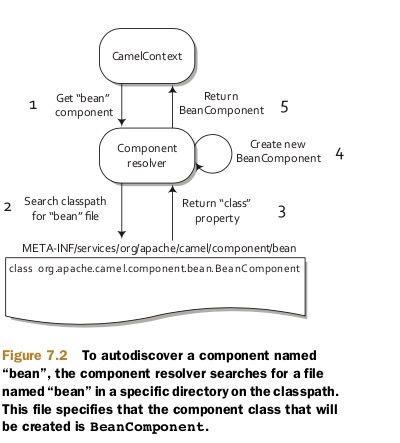

如果把Routes比作一条公路，那么Component就类似于公路的入口以及出口
Component要实现接口，主要职责为Endpoint的生产工厂
public interface Component {
Endpoint createEndpoint(String uri) throws Exception;
CamelContext getCamelContext();
void setCamelContext(CamelContext context);
}
将Component注册到CamelContext中
主要有两种方式：
手动注册
CamelContext context = new DefaultCamelContext();
context.addComponent("jms",
JmsComponent.jmsComponentAutoAcknowledge(connectionFactory));
自动发现
需要在文件META-INF/services/org/ apache/camel/component中指定class
class=org.apache.camel.component.bean.BeanComponent
